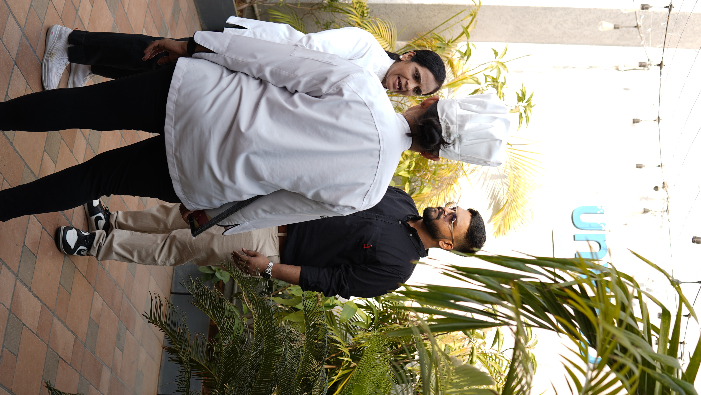
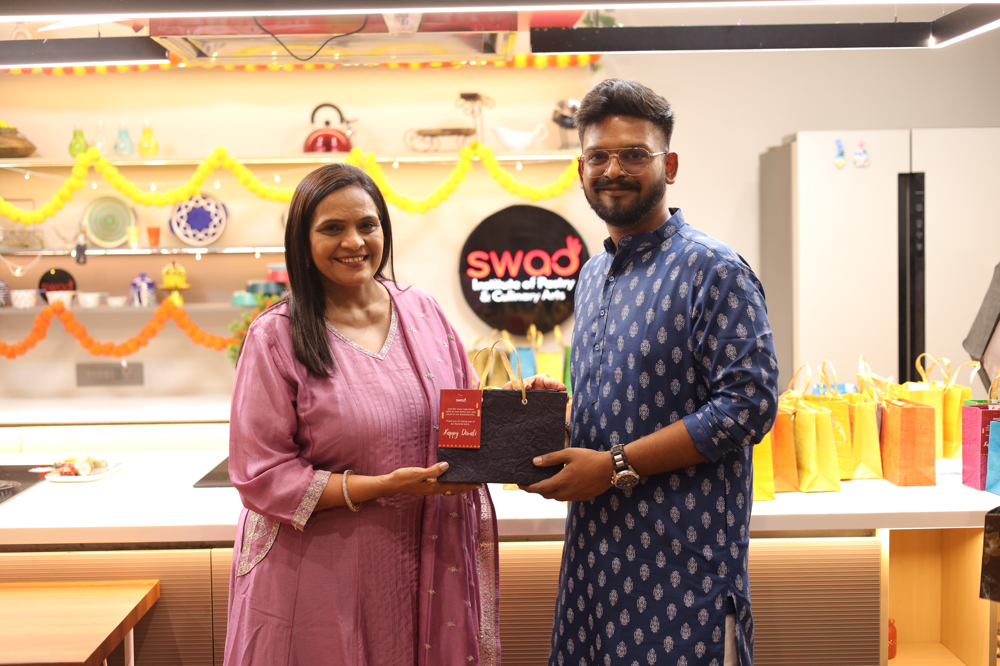

Audience tribute · Swad Cooking Institute
The Farewell Diwali livestream
When I resigned, I wanted to thank the team and the audience properly. One continuous 5h 34m thank-you livestream with 20 recipes and six named participants.
5h 34m one continuous livestream
20 recipes
6 named participants
Context
A thank you, not a growth play
I knew I would miss the team and the audience we had built. This livestream was a tribute, not a growth or revenue tactic.
Execution
One livestream, twenty recipes
Plan the Diwali menu
Assign recipes across the named participants
Run one continuous session
Teach all 20 recipes live
Evidence
Watch the livestream
Full farewell Diwali stream on YouTube.
The Diwali menu


Results
What it was for
No views or revenue target was set for this stream. It was a farewell to the audience, run as one continuous session so people could stay with the team from start to finish.
Takeaway
Close well, not just perform well
How a piece of work ends matters as much as how it runs. This was the way I wanted to leave the audience that had grown with the channel.